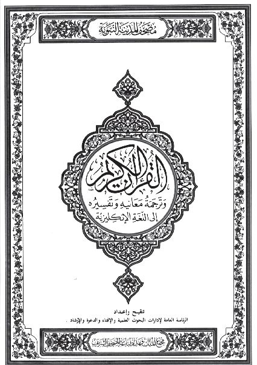
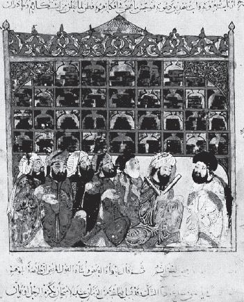
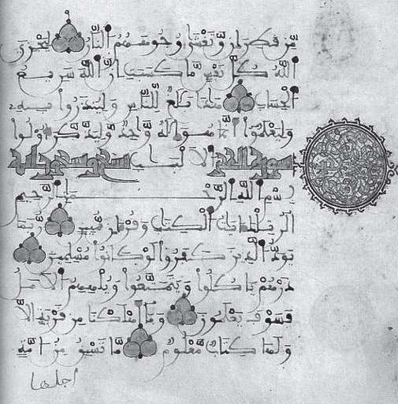
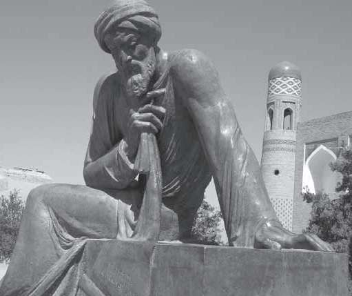
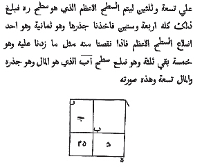
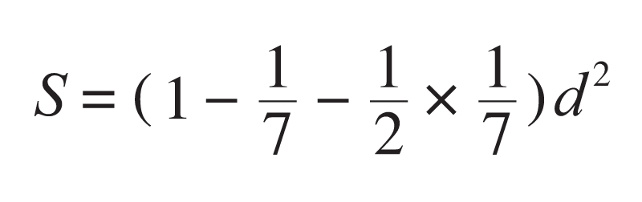

阿拉伯帝国的兴盛被视为人类历史上最精彩的插曲之一，这当然与先知穆罕默德的传奇经历有关。570年，穆罕默德出生在阿拉伯半岛西南部的麦加。与耆那教和佛教的始祖摩诃毗罗和释迦牟尼不同，他的祖父虽是部落首领，但他从小就是孤儿，无权继承遗产。麦加当时是一个远离商业、艺术和文化中心的落后地区，穆罕默德在极其艰苦的条件下长大成人。25岁那年，他娶了一位富商的遗孀，经济状况有所改善。直到40岁前后，他的人生才有了奇妙的变化。
穆罕默德领悟到有且只有一个全能的神主宰世界，并确信真主安拉选择了他作为使者在人间传教。这就是伊斯兰教的来历，它在阿拉伯语里的意思是“顺从”，其信徒叫作穆斯林（已顺从者）。根据伊斯兰教的教义，世界末日死者会复活，每个人将依照自己的行为受审。穆斯林有解除他人痛苦、救济贫穷者的义务，而聚敛财富或否认穷人的权利将导致社会腐败，会在后世受到严惩。伊斯兰教还强调，一切信徒皆为兄弟，他们共同生活在紧密的集体中，安拉比颈部的血管离你还近。
622年，穆罕默德带领大约70名门徒被迫出走，他们来到麦加以北200公里的麦地那。这是伊斯兰教的又一个转折点，其信徒人数迅速增加。居住在阿拉伯半岛上的贝都因人是讲阿拉伯语的游牧民族，以勇猛善战著称，但他们四分五裂，一直不是生活在半岛北部可耕作土地上的其他部落的对手。穆罕默德通过伊斯兰教以及联姻等世俗手段把他们团结起来，开始了史无前例的大规模征战（圣战），他本人曾亲率穆斯林大军逼近叙利亚的边界。
在穆罕默德去世（632）后的10年里，这支军队在他的两任哈里发继承人（均是他的岳父）的率领下，击败了波斯萨珊王朝的大军，占领了美索不达米亚、叙利亚和巴勒斯坦，并从拜占庭手中夺取了埃及（给了亚历山大最后一击）。大约在650年，依据穆罕默德得到的真主的启示辑录而成的《古兰经》问世。这部书被穆斯林视为上天的启示，用真主安拉的语言写成，并成为伊斯兰教的四项基本原则（乌苏尔）之首（其余三项分别是圣训、集体一致意见和个人判断）。
清真寺的几何轮廓

《古兰经》封面
在那以后，阿拉伯人的征战并未结束，711年他们扫平北非，直指大西洋。接着，他们向北穿越直布罗陀海峡，占领西班牙。那时候中国处于唐朝的太平盛世，李白（701—762）还是一个孩童，杜甫（712—770）则在母亲的腹中。在数学界，印度的婆罗摩笈多已经过世半个世纪，无论是东方还是西方均没有一个数学家在世。信奉基督教的欧洲岌岌可危，似乎快要被穆斯林的军队攻克。可是，732年，已经抵达法国中部的阿拉伯人在图尔战役中战败。
尽管如此，阿拉伯人已经把他们的疆域拓展到东起印度，西至大西洋，北达里海和中亚的广阔地区，这可能是迄今为止人类历史上最大的帝国了。穆斯林军队每到一处，就在那里不遗余力地传播伊斯兰教。755年，由于哈里发的权力之争，阿拉伯帝国分裂成东西两个独立王国，西边的定都西班牙的科尔多瓦，东边的定都叙利亚的大马士革。后者在由阿拔斯家族掌握权力之后，重心逐渐东移到了伊拉克的巴格达，在那里阿拉伯人创建了“一座举世无双的城市”，阿拔斯王朝也成为伊斯兰历史上最驰名和统治时间最长的朝代。
巴格达位于底格里斯河畔距离幼发拉底河的最近处，四周是一片平坦的冲积平原。巴格达一词在波斯语里的意思是“神赐的礼物”，自从762年被阿拔斯王朝的第二任哈里发曼苏尔（Mansur，707—775）选定为首都之后，这座城市开始兴旺发达，在一个圆形的城墙内，一座座宫殿和建筑拔地而起。到8世纪后期和9世纪上半叶，巴格达在马赫迪（Mahdi，1848—1885）及其继承人哈伦·拉希德（Rashid，约764—809）和马蒙（786—833）的领导下，经济繁荣和学术生活都达到顶点，成为继中国长安城之后世界上最富庶的城市。
在世界史上，9世纪是以两位皇帝的出场拉开帷幕的，他们在国际事务中占有优越的地位。其中一位是法兰克国王查理曼（Charlemagne，742—814），他的爷爷曾成功地在法国图尔阻止了穆斯林军队的入侵，800年的圣诞节，他被教皇加冕为“罗马人的皇帝”；另一位是哈伦·拉希德。在这两个人中，哈伦·拉希德的势力无疑更大一些。出于各自的目的，这两位同时代的东西方领袖人物之间建立了私人友谊和同盟关系，经常互赠贵重的礼品。查理曼希望哈伦·拉希德和他一起对抗他的敌人——拜占庭帝国，哈伦也希望利用查理曼对抗他的死对头——西班牙的倭马亚王朝。

智慧宫。1237年的插画
无论历史还是传说，都证实了巴格达最辉煌的时代就是哈伦·拉希德在位时期。建都不到半个世纪的时间，这座城市就从一个荒芜之地发展成一个拥有惊人财富的国际大都会，只有拜占庭的君士坦丁堡可以与之抗衡。哈伦·拉希德是一位典型的穆斯林君主，他所表现出来的慷慨大方，像磁石一样把诗人、乐师、歌手、舞女、猎犬和斗鸡的驯养者，以及所有有一技之长的人都吸引到巴格达。以至于在《一千零一夜》里，哈伦·拉希德被描绘成挥金如土、穷奢极侈的君主。
与此同时，大约在771年，即巴格达建都的第9年，有一位印度旅行家带来了两篇科学论文。一篇是天文学论文，曼苏尔命人把这篇论文译成阿拉伯文，结果那个人就成了伊斯兰世界的第一位天文学家。阿拉伯人还在沙漠里生活时，就对星辰的位置很感兴趣，却没有做过任何科学研究。他们信奉伊斯兰教后，增加了研究天文学的动力，因为无论身处何地，每天都需要向麦加方向祈祷朝拜5次，此乃伊斯兰五功之一的拜功，另四功分别是念功、课功（纳财供赈济贫民）、斋功和朝功（朝觐麦加）。

希腊著作的阿拉伯语译本
另一篇是婆罗摩笈多的数学论文，正如美国历史学家希提（P.Hitti，1886—1978）所说，欧洲人所谓的阿拉伯数字，以及阿拉伯人所谓的印度数字，就是由这篇文章传入穆斯林世界的。不过，印度人的文化输出十分有限。在阿拉伯人的生活中，希腊文化最终成为一切外国影响因素中最重要的。事实上，在阿拉伯人征服叙利亚和埃及以后，他们接触到的希腊文化遗产便成为他们眼里最宝贵的财富。之后，他们四处搜寻希腊人的著作，包括欧几里得的《几何原本》、托勒密的《地理志》和柏拉图等人的著作便陆续被译成了阿拉伯语版本。
必须指出的是，那时候中国的造纸术传入阿拉伯世界不久（4个世纪以后，这一技艺像印度—阿拉伯数字一样，经中东和北非绕过地中海传入欧洲），巴格达城里已建起一座造纸厂。自东汉的蔡伦于2世纪初发明造纸术以后，在很长一段时间里，中国人对造纸工艺严格保密。可是，751年，唐朝的一支军队在今哈萨克斯坦中部的江布尔败于阿拉伯人，一批造纸工人被俘虏到撒马尔罕，他们在牢房里被迫泄露了造纸工艺。
在哈伦·拉希德的儿子马蒙继任哈里发之后，希腊的影响力达到了极致。马蒙本人对理性十分痴迷，据说他曾梦见亚里士多德向他保证，理性和伊斯兰教教义之间没有真正的分歧。830年，马蒙下令在巴格达建造了“智慧宫”（Baytal-Hikmah）。那是一个集图书馆、科学院和翻译局于一体的联合机构，无论从哪方面来看，它都是公元前3世纪亚历山大图书馆建立以来最重要的学术机关。很快，它就成为世界的学术中心，研究的内容包括哲学、医学、动物学、植物学、天文学、数学、机械、建筑、伊斯兰教教义和阿拉伯语语法学，等等。
在阿拔斯王朝早期这个漫长而有成效的翻译时代的后半期，巴格达迎来了一个对于科学来说具有独创性的年代，其中最重要、最有影响力的人物便是数学家、天文学家花拉子密（Khwarizmi，约783—约850）。花拉子密出生时，印度数学家婆罗摩笈多已去世一个多世纪了，而马哈维拉尚未出世。花拉子密的生平资料很少流传下来，一般认为，他出生在注入咸海的阿姆河下游的花剌子模地区，即今天乌兹别克斯坦境内的希瓦城附近。另一个说法是，他生在巴格达近郊，祖先是花剌子模人。但有一点比较肯定，花拉子密是拜火教徒的后裔。

撒马尔罕的花拉子密塑像
拜火教又名琐罗亚斯德教或祆教、帕西教，距今已有2500多年的历史，以对火的尊崇，反对戒斋、禁欲、单身，以及主张善恶二元论著称。其创始人琐罗亚斯德（Zarathustra，公元前628—前551）比耆那教的创始人摩诃毗罗年长约30岁，他的故乡在今天伊朗的北部，他创立的宗教几度成为波斯帝国的国教。从花拉子密是拜火教徒这一点我们可以推测，他很有可能是波斯人的后裔，即便不是（或许是中亚人），他的精神世界也倾向于波斯这个富有悠久文化传统的民族。虽然花拉子密不是纯粹的阿拉伯人，但他无疑精通阿拉伯文。
花拉子密早年在故乡接受教育，后到中亚古城梅尔夫继续深造，并到过阿富汗、印度等地游学。不久，他便成为远近闻名的科学家，时任东部地区统治者的马蒙曾在梅尔夫召见他。813年，马蒙成为阿拔斯王朝的哈里发后，聘请花拉子密到首都巴格达工作。后来马蒙创建智慧宫，花拉子密就担任了智慧宫的主要负责人。在马蒙去世后，花拉子密仍留在巴格达工作，直至离世。那时的阿拉伯帝国处于政治稳定、经济发展、文化科学繁荣的阶段。

花拉子密的《代数学》手稿
花拉子密在数学方面留下了两部传世之作——《代数学》和《印度的计算术》。《代数学》的阿拉伯文原名是“还原与对消计算概要”，其中还原一词al-jabr也有移项之意。这部书在12世纪的后翻译时代被译成拉丁文，在欧洲产生了巨大影响。al-jabr也被译成algebra，这正是今天包括英文在内的西方文字中的“代数学”一词。于是，花拉子密的书也被题为“代数学”。可以说，正如埃及人发明了几何学，阿拉伯人命名了代数学。
《代数学》这部书大约完成于820年，所讨论的数学问题并不比丢番图或婆罗摩笈多的问题复杂，但它探讨了一般性解法，因而远比希腊人和印度人的著作更接近于近代初等代数，这是难能可贵的。书中用代数方式处理了线性方程组，并率先给出了二次方程的一般代数解法，还引进了移项、合并同类项等代数运算方法。这一切为作为“解方程的科学”的代数学开拓了道路，难怪花拉子密的书在欧洲被用作标准课本长达数百年，这对东方数学家来说十分罕见。
婆罗摩笈多只给出了一元二次方程一个根的解法，花拉子密则求出了两个根。可以说，他是世界上最早认识到二次方程有两个根的数学家。遗憾的是，尽管他意识到负根的存在，但却舍弃了负根和零根。他指出，（用现在的语言）如果判别式是负的，则方程无（实）根。在给出各种典型方程的解以后，花拉子密还用几何方法给予证明，这明显是受到欧几里得的影响。因此我们可以说，花拉子密与后来的其他阿拉伯数学家一样，深受希腊和印度两大文明的熏陶，这当然与他们所处的地理位置有关。
《印度的计算术》也是数学史上非常有价值的一本书，该书系统地介绍了印度数字和十进制计数法。尽管此前已被那位印度旅行家介绍到巴格达，但并未引起广泛注意，而花拉子密使它们在阿拉伯世界流行起来。12世纪，这本书传入欧洲并广为传播，其拉丁文手稿现存于剑桥大学图书馆。印度数字也逐渐取代了希腊字母计数系统和罗马数字，成为世界通用的数字，以至于人们习惯称印度数字为阿拉伯数字。值得一提的是，该书的原名是“花拉子密的印度计算法”（Algoritmi de numero indorum ），其中Algoritmi是花拉子密的拉丁语名字，现代数学术语“算法”（Algorithm）即来源于此。
在几何学领域，尤其是在面积测量方面，花拉子密也有自己的贡献。他把三角形和四边形进行了分类，分别给出相应的面积测量公式。他还给出了圆面积的近似计算公式：

d为圆的半径，圆周率等于3 ≈3.14。阿拉伯人和印度人一样，沿用了埃及人使用单位分数的习惯。花拉子密还给出了弓形面积的计算公式，并把弓形分为大于和小于半圆的两种情况。
在天文学方面，花拉子密也做出了重要贡献。他汇编了三角表和天文表，以便测定星辰的位置和日月食，并撰写了多部专述星盘、正弦平方仪、日晷和历法的著作。这方面花拉子密有一位出色的继承人，即在叙利亚出生的巴塔尼（Battani，约858—929），他发现了太阳的远地点（离地球最远的点）的位置是变动的，因而有可能发生日环食。巴塔尼用三角学取代几何方法，引进了正弦函数，纠正了托勒密的一些错误，包括太阳和某些行星轨道的计算方法。巴塔尼的《历数书》在12世纪被译成拉丁文出版，使其成为中世纪欧洲人最熟知的阿拉伯天文学家。
在数学与天文学之外，花拉子密也有许多贡献，他用阿拉伯文写出了最早的历史著作，有力地推动了历史学这门学科的发展。因为军事和商业贸易（阿拉伯人是精明的商人）的需要，制作世界地图在当时非常重要，这要用到复杂的数学和天文学知识。花拉子密的《地球景象书》是中世纪阿拉伯世界的第一部地理学专著，书中描述了当时世界上已知的重要居民点、山川湖海和岛屿，并附有4幅地图。